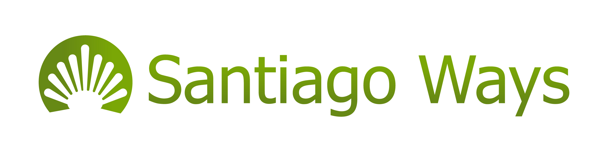

Tour virtual · Camino Francés
Sobrevuela las cinco etapas de Sarria a Santiago: los pueblos, puentes y paisajes que vas a vivir, día a día. Sobrevuela las cinco etapas de Sarria a Santiago, día a día.
5 etapas114 km Hoteles seleccionadosHoteles

Tour virtual · Día 1 de 5
Sarria → Portomarín
Con «Etapa completa», el mapa se queda quieto y solo avanza el punto verde.
Mapbox desactivado. Pega tu token público (empieza por «pk.») en js/config.js
o añade ?token=pk.… a la URL. Mientras tanto se usan mapas de prueba.
Mapas de Mapbox · 50.000 cargas gratis al mes.
0,0km de 22,2
Desnivel + 0 m de 0 m
Día 1 completado · 22,2 km